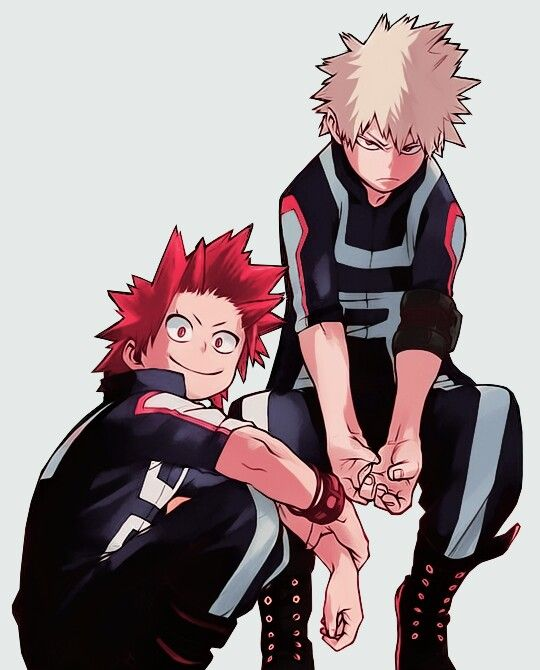
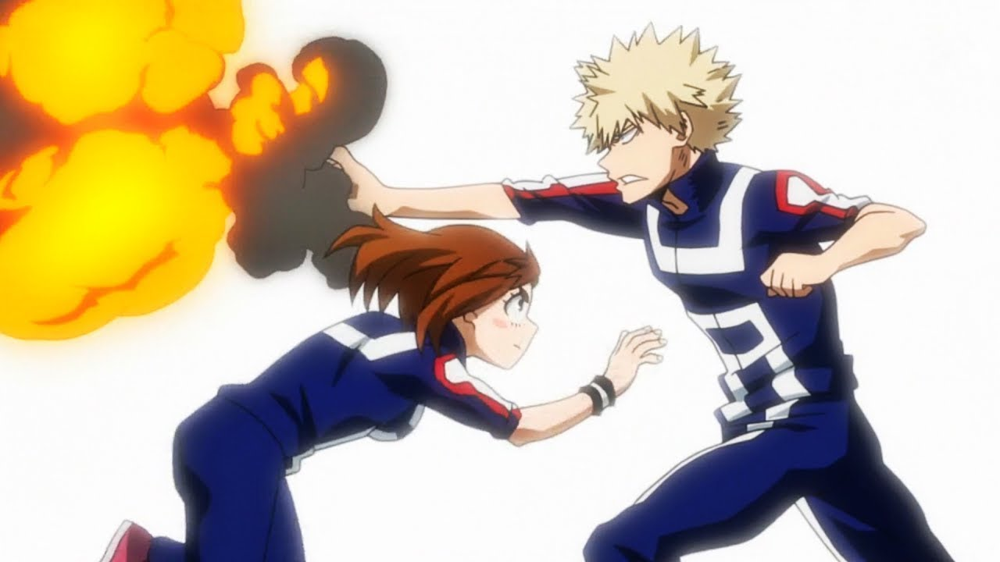
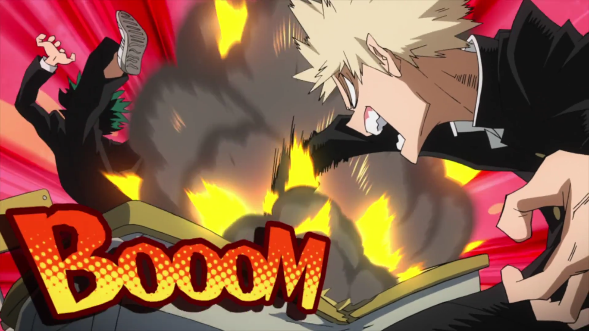

This ship is fairly popular, especially after the latest movie
This ship is popular, but is somewhat overshadowed by Deku and Uraraka ship, which has a lot more cannonical support
This ship, unless totally broken apart and rebuilt from the ground up would likely be an abusive relationship since Bakugo has bullied Deku for years.
